Workflow automation
Lead capture, tagging, branching logic, internal notifications, wait steps, follow-up sequences — built in the GHL workflow builder and stress-tested before launch.
GoHighLevel systems · Automation · CRM
I design and build complete GoHighLevel systems: lead capture, instant follow-up, pipelines that actually get updated, and dashboards that tell you the truth about your revenue. You focus on closing — the system does the chasing.
Sound familiar?
Every one of these is a system problem — and every one of them is fixable in GoHighLevel. That's the work you'll see below.
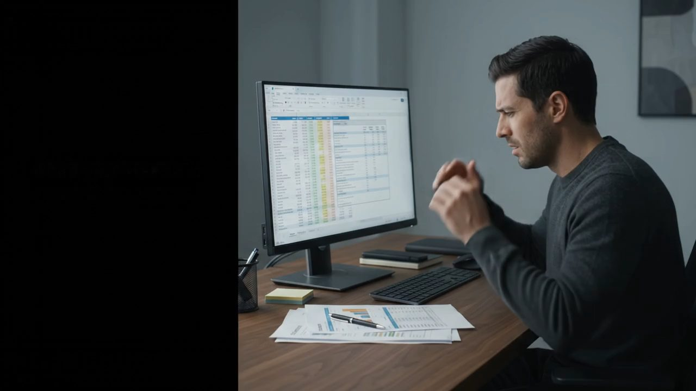
What I build
Everything below is built, tested, documented, and handed over ready to run.
Lead capture, tagging, branching logic, internal notifications, wait steps, follow-up sequences — built in the GHL workflow builder and stress-tested before launch.
Pipelines that update themselves: opportunities created or synced automatically from forms, calls booked, and replies — so your board reflects reality.
Agency and sub-account dashboards: opportunity status, conversion rates, funnel stages, revenue distribution — the numbers you need at a glance.
Multi-trigger routers for GHL forms, Google Forms, Facebook lead ads and webhooks — every lead lands in the right pipeline with the right tags.
Reply detection that stops the sequence the moment a human answers, plus reminder and confirmation flows that fill your calendar instead of your inbox.
Communication consent, pause restrictions, and DND handling built into your automations — so the system respects the rules without manual babysitting.
Selected work
Real builds from real client accounts. Click any shot to zoom in.
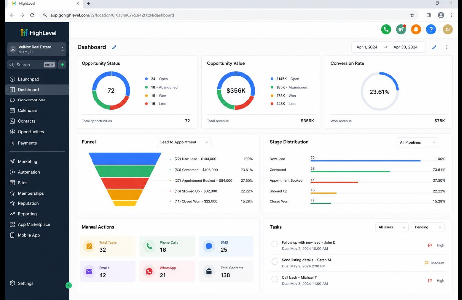
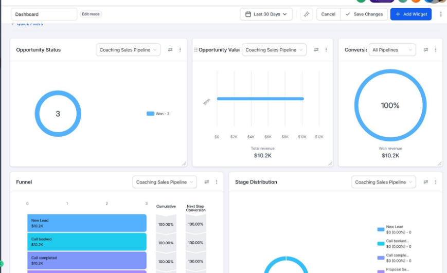
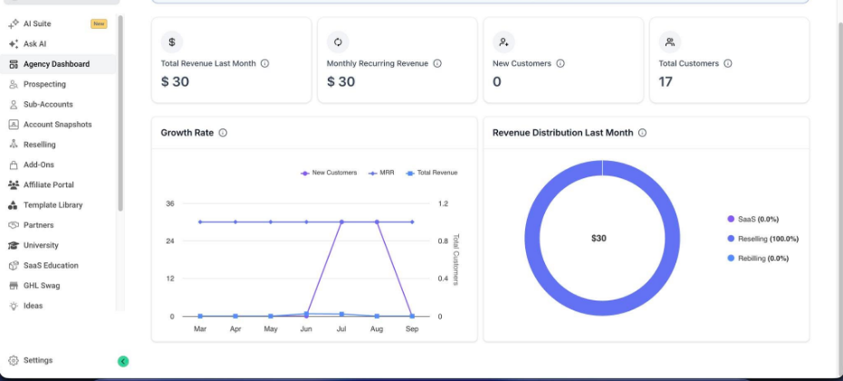
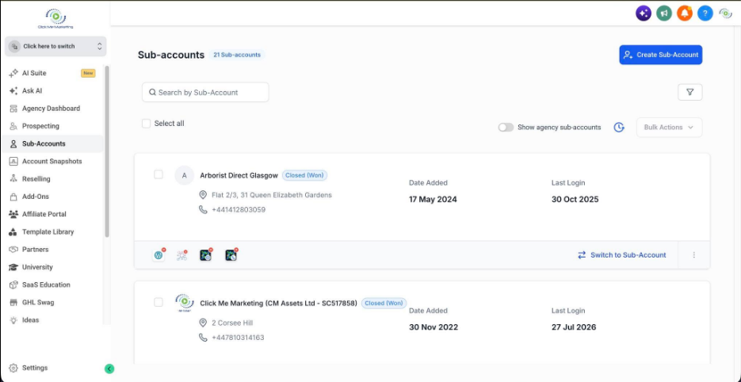
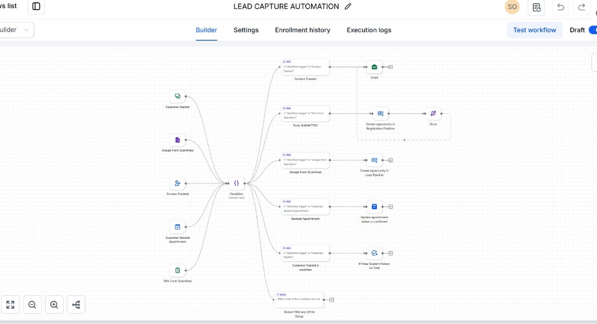
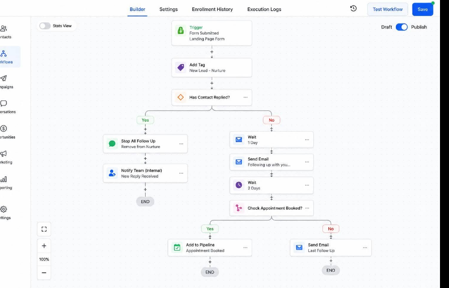
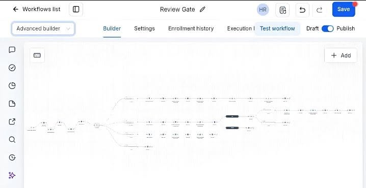
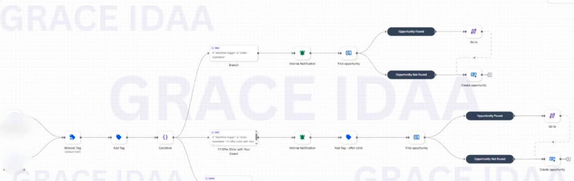
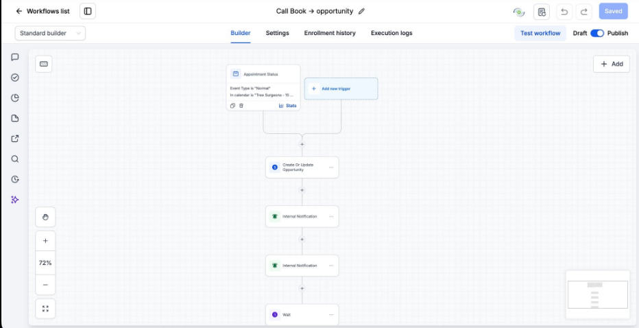
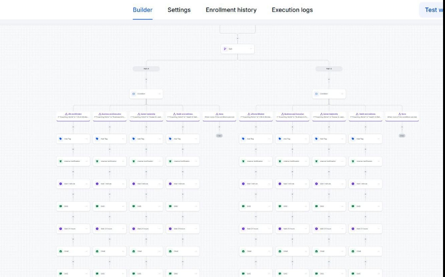
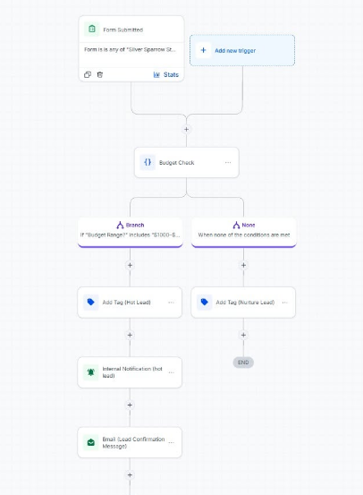
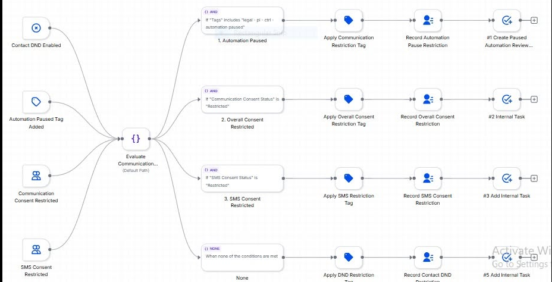
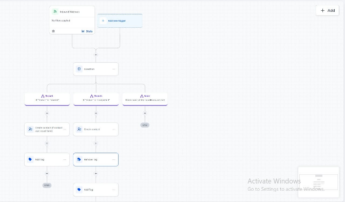
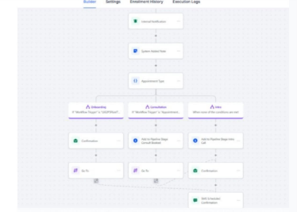
How it works
We map how leads actually flow through your business today — every form, inbox, and handoff. You'll see exactly where leads leak.
I build the workflows, pipelines, and dashboards in your GHL account — branching logic, tagging, notifications, the whole machine.
Every path is tested with real scenarios before going live. Then we flip the switch and monitor the first leads through the system together.
You get documentation, a walkthrough, and an offer of ongoing support — the system is yours, not a black box.
Results
Word of mouth
“The follow-up system alone paid for itself in the first month. Leads that used to disappear now get answered in minutes.”
“For the first time I can open a dashboard and actually trust what I'm looking at. My pipeline finally matches reality.”
“He took a tangled mess of automations and rebuilt it into something clean — documented everything, too.”
FAQ
No — if you don't have it yet I'll help you pick the right plan and set up your account (or agency sub-accounts) from scratch as part of the build.
Most single-system builds (capture + nurture + pipeline + dashboard) take 1–2 weeks. Larger multi-niche or multi-account setups run 2–4 weeks.
Yes. Every build ships with documentation and a recorded walkthrough. The workflows are organized and named so a non-technical person can safely make small edits — and I'm available for bigger changes.
Access to your GHL account (or a sub-account seat), a description of how leads come in today, and one call to map the process. That's it.
Next step
Tell me what's breaking in your follow-up. I'll tell you exactly how I'd fix it — free, no strings.